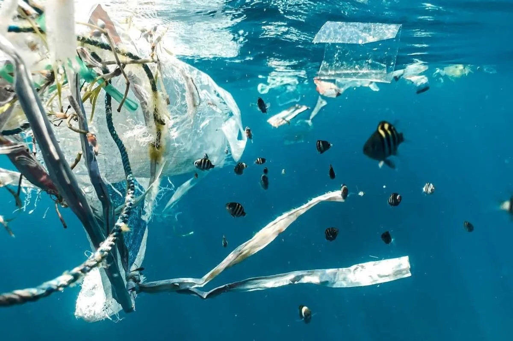

Impactos do Descarte Incorreto
Quando resíduos são descartados de forma inadequada, diversos problemas ambientais e sociais podem surgir. Um único ato pode gerar consequências que afetam toda a comunidade.

POLUIÇÃO AMBIENTAL AMBIENTE PRESERVADO
AMBIENTE PRESERVADO
Descarte Incorreto
O descarte inadequado pode gerar diversos impactos ambientais e sociais.
🌊
Água
Poluição de rios, lagos e mares.
Peixes afetados
🌱
Solo
Contaminação do solo e das plantações.
Cultivos prejudicados
🦠
Saúde
Proliferação de doenças e vetores.
Dengue e infecções💡 Como evitar?
Separar corretamente os resíduos e utilizar a coleta seletiva são atitudes simples que ajudam a proteger o meio ambiente e a saúde da população.